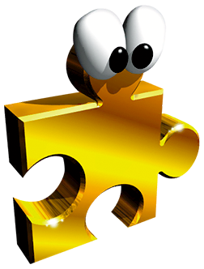

Choose your style
Das originale Puzzleteil, direkt mit der Zeitmaschine aus 1998 importiert

Das polierty Puzzleteil, für alle Edel-Spieler da draussen

Das lebende Jiggy, Freund und Spielzeug zugleich